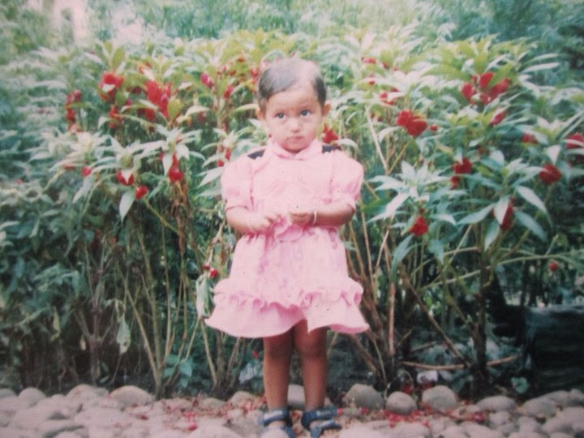
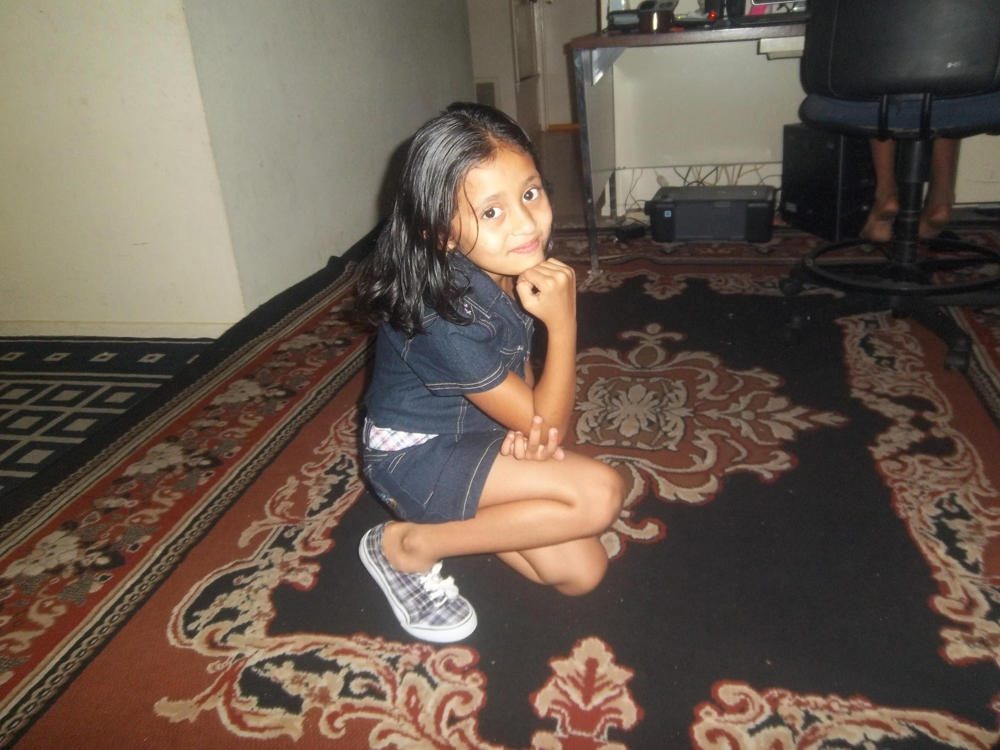
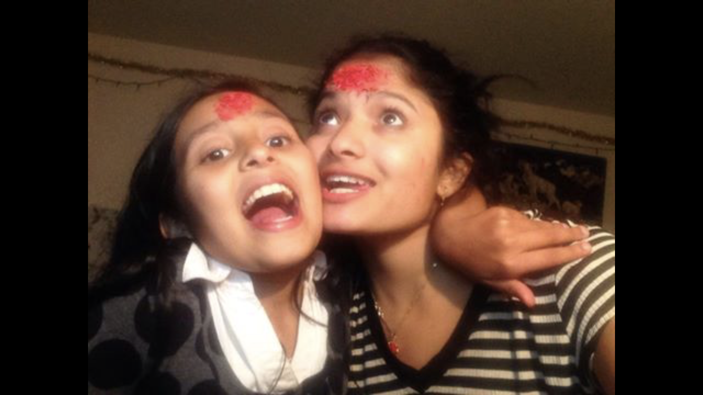
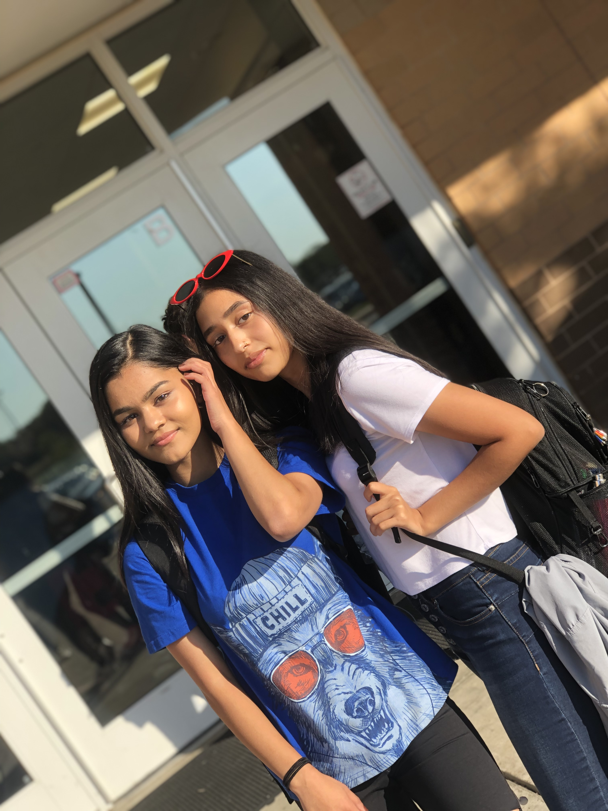

Short Stories
My early childhood was a good type of tragic. From the start of my life at the MCH clinic to a few months before my fifth birthday, my family lived in the Beldangi 2 Refugee Camp in Damak, Jhapa, Nepal. Our house was hut number seventy-four in Sector H2. Nepal is among the poorest and least developed countries in the world, with one-third of its population living below the poverty line. So needless to say, we were poor. My brother, who was four at the time, was so excited to see his super cute baby sister that he ran into a stack of bamboo and cut his cheek open. I don’t remember very much about life in Nepal, and I wish I could’ve lived there longer because I don’t have concrete memories of the place.

I was five years old when, in June of 2009, the IOM (International Organization for Migration) and USCIS ( The United States Citizenship and Immigration Services) helped us get our life together, and we were off on our adventure to the United States of America, supposedly “The Land of The Free.” Texas was a huge step up from Nepal. My family lived at the 4411 Gardendale Apartment Complex which was a decent place for a family to live. I had a few friends, and most of my family lived in the same area. My first American school was Colonies North Elementary, home of the Cougars. My favorite part about Texas was going to Six Flags every year. My dads' new job would be kind enough to give us four free one-day passes to Six Flags. One time I waited a few hours in a line for a roller coaster only to be told by one of the employes that I was too small to get on the ride, needless to say, I was pretty disappointed. There isn’t much else to say about Texas other than the fact that I lived there for four years before my mom got a job offer in Twin Falls, Idaho and my family decided to move was the best option. I didn't care much because I was only about ten years old. I was excited to leave because I had never traveled anywhere other than the trip from Nepal to Texas and more of my family was in Idaho.

The summer of 2013 is when the move happened, and it was one of the best years of my life. To me, personally, the move was very uncomplicated and straightforward. My mom and brother flew to Twin; meanwhile, my dad, uncle, and I drove to Twin. The drive took about two days, but to me, it felt like forever. When we arrived, we were greeted by my mom and brother, along with other relatives. After we got settled in, we lived in the Bell Isle apartments on Sparks Street North. My cousins lived in the same apartment complex, and we would have a blast together. Their family has three kids, Bikash, Shrijana, and Sunny; we still get along to this day. I went to school at Perrine Elementary, which was conveniently right across the street from where I lived, and that's where I went for the remaining two years of elementary school.

Middle school went by in a flash and my freshman year was dope. I had 4/7 of my classes with my best friend and life was going pretty smoothly. Summer 2019 my parents decided to move to Ohio. We sold our house and drove 32 hours from Twin Falls, Idaho to Blacklick, Ohio. The trip was pretty amazing because the views were so wonderful but it was also super tiring and long. My brother and I were in one car and my Mom and Dad were in the other. All my brother and I did the whole time was listen to music and talk about life. We had some deep conversations. We also played the ocassional eye spy and liscence plate game. We only got 42/50 states but I think thats because we started the game 10 hours into our drive instead of right when we go on the road. We recently just bought our second house in October 2019 and my life has been pretty smooth sailing so far. I'm extremely thankful for every opportunity I've been given because I'm privileged enough to realize that a lot of people don't have what I have and I think it's important to recognize how lucky I am to be living such a wonderful life.